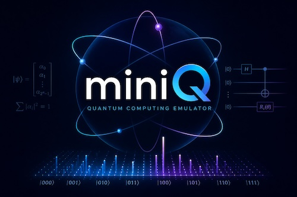

Inspect The State
Read probabilities, amplitudes, norms, measurement collapse, and most-significant-bit-first labels directly from the simulator.

miniQ is a small full state-vector simulator for learning gates, measurement, entanglement, QFT, and small-scale Shor-style circuits without depending on quantum computing libraries.
miniQ keeps the simulation model visible, compact, and hackable. It is designed for readers who want to see what the amplitudes are doing after each circuit step.
Read probabilities, amplitudes, norms, measurement collapse, and most-significant-bit-first labels directly from the simulator.
Apply core gates, controlled operations, SWAP, QFT, modular arithmetic helpers, and track each operation in circuit history.
Work with exact state vectors while seeing why memory grows as 2^n, and why educational factor-15 demos are not RSA factoring.
The CLI can display probabilities, operation history, raw state, and measurement samples from built-in examples.
cargo run --bin miniq -- bell --shots 1000 --historyBell measurements return only correlated outcomes: 00 or 11.
miniQ is a Rust crate and CLI. Clone the source, run the tests, then try the examples from the command line.
git clone https://github.com/duliodenis/miniQ.git
cd miniQ
cargo test
cargo run --example bell_state
cargo run --bin miniq -- swap --state --historyState-vector simulation is excellent for learning because every amplitude is available. The cost is exponential memory growth.